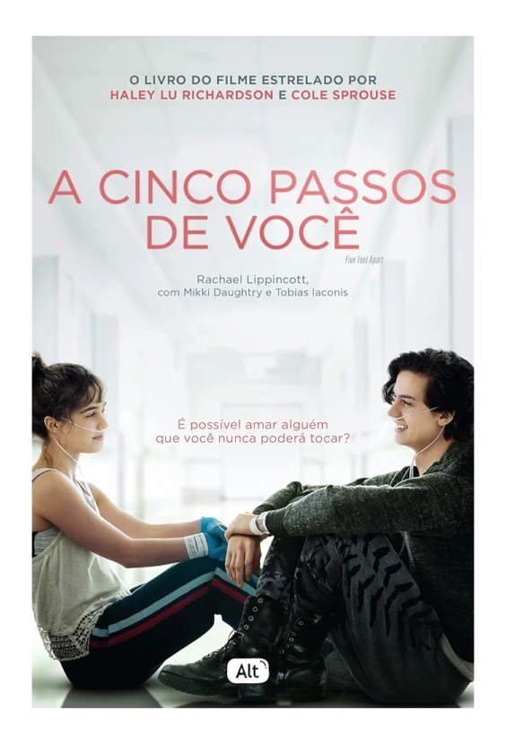

A cinco passos de você - Rachael Lippincott
Sinopse
Stella Grant gosta de estar no controle. Ela parece ser uma adolescente típica, mas em sua rotina há listas de tarefas e inúmeros remédios que ela deve tomar para controlar a fibrose cística, uma doença crônica que impede que seus pulmões funcionem como deveriam. Suas prioridades são manter seus pais felizes e conseguir um transplante – e uma coisa não existe sem a outra. Mas para ganhar pulmões novos, Stella precisa seguir seu tratamento à risca e eliminar qualquer chance de infecção, o que significa que ela não pode ficar a menos que dois metros de distância – ou seis passos – de outros pacientes com a doença. O primeiro item é fácil para ela, mas o segundo pode se provar mais difícil do que ela esperava. O único controle que Will Newman deseja é o de sua própria vida. Ele não dá a mínima para o novo tratamento experimental para o qual foi selecionado e não aguenta mais a pressão de sua mãe para que melhore. Prestes a completar dezoito anos, ele mal pode esperar para finalmente se livrar das máquinas e hospitais, usando o pouco de vida que ainda lhe resta para conhecer o mundo. Stella e Will são muito diferentes. Ao mesmo tempo, a doença que os une não é a única coisa que têm em comum. Eles têm que ficar a cinco passos um do outro, mas, conforme a conexão entre os dois aumenta, a vontade de burlar a distância física parece insuportável. Um grande amor vale um passo roubado?